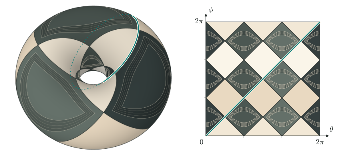

The main theorem, that every bounded set in R^4 splits into six parts of smaller diameter, is fully checked in Lean 4 with Mathlib; the artifact is on Zenodo.
Abstract
Can every set of diameter one in four dimensions be split into at most five parts of smaller diameter? Three parts suffice in the plane and four in three-dimensional space. In four dimensions five parts are sometimes necessary. We prove that six always suffice, improving the previous upper bound of seven. For small circumradius we use six cones. For large circumradius five balls meet every diametral pair of a compact set. At intermediate radii we bound the diameter of each part by the diameter of a rational polytope. The theorem is formalised in Lean.
Problem
Borsuk's question in dimension four asks for the least number b_4 of parts of smaller diameter that always suffices for a set of diameter one. The previous bounds were 5 <= b_4 <= 7.
Approach
The proof splits into cases by circumradius. For small circumradius, six congruent cones built from two equilateral triples in orthogonal planes partition the circumball. For large circumradius, five balls are chosen so that no two uncovered points are at unit distance, and a second-moment estimate rules out such pairs. At intermediate radii, contact triangles and six affine functions give the partition, with diameters bounded through rational polytopes computed in Python, and the full theorem is formalised in Lean 4 with Mathlib.

Figure 1. Stereographic projection of the Clifford torus (left) and its angle square (right). The boundaries \theta\pm\phi\in(2\pi/3)\mathbb{Z} project to six Villarceau circles. The turquoise diagonal \theta=\phi traces one such circle, dashed where hidden. In the dark regions m(\theta)>m(\phi) . The fine contours mark m(\theta)-m(\phi)=k/32 , 4\leq k\leq 8 .
Results
Every bounded subset of R^4 of positive diameter can be partitioned into at most six sets of strictly smaller diameter, so 5 <= b_4 <= 6. This improves the previous upper bound of seven, and the formalisation is released on Zenodo.